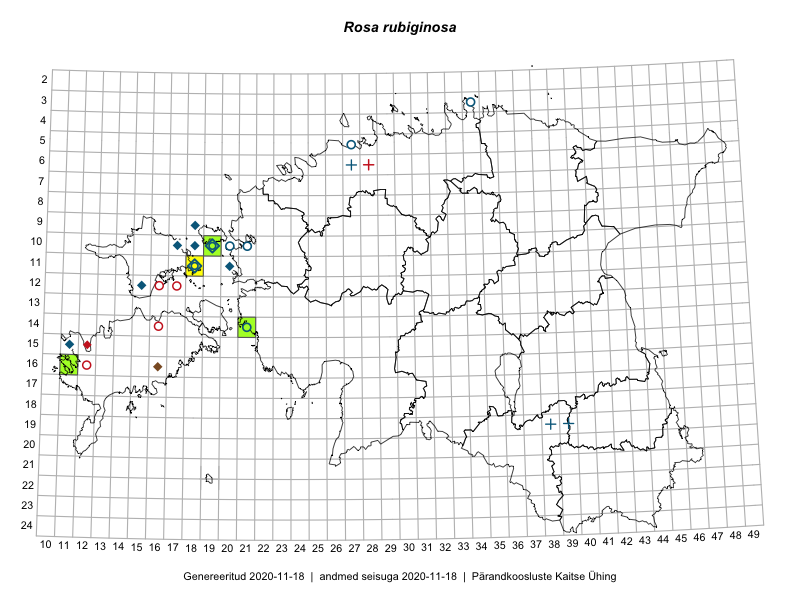

Rosa rubiginosa — näärmekas kibuvits
Rosaceae :: Rosa rubiginosa L. (38)

Kaart põhineb 43 kirjel:
vaatlusi 18
herbaareksemplare 20
PKÜ kirjeid1 4
ELFi kirjeid2 1
Taime kaasaegsed ja ajaloolised leiukohad asuvad 19 ruudus.
Tingmärgid ja ruutude arvud periooditi (U3 / V4 )
█ 2006–2020 (5/–)
◆/◇ 1971–2005 (9/6)
○ 1921–1970 (7/8)
+ kuni 1920 (3/2)
× hävinud (–/0)
? kaheldav (–/0)
| Ruut | Leidja(d) | Leiuaeg | Kirje |
|---|---|---|---|
| 10-17 | Taavi Tuulik | 1984–1986 | ruut/ala: Rosa rubiginosa L. |
| 11-18 | Haide-Ene Rebassoo | 1957–1984 | ruut/ala: Rosa rubiginosa L. |
| 12-15 | Taavi Tuulik | 1984–1986 | ruut/ala: Rosa rubiginosa L. |
| 03-34 | J. Eplik | 1935-06 | ruut/ala: Rosa rubiginosa L. |
| 11-20 | H.-E. Rebassoo | 1984-06-23 | ruut/ala: Rosa rubiginosa L. |
| 11-18 | H.-E. Rebassoo | 1979-06-23–1980-08-25 | ruut/ala: Rosa rubiginosa L. |
| 10-18 | Toomas Kukk, Elle Roosaluste | 1993-08-25–1996-07-17 | ruut/ala: Rosa rubiginosa L. |
| 09-18 | Toomas Kukk, Elle Roosaluste, Mare Leis | 1993-08-25–1998-09-21 | ruut/ala: Rosa rubiginosa L. |
| 10-19 | Toomas Kukk, Elle Roosaluste | 1993-07-10–1996-07-15 | ruut/ala: Rosa rubiginosa L. |
| 10-19 | Toomas Kukk, Elle Roosaluste | 1993-06-27–1996-07-15 | ruut/ala: Rosa rubiginosa L. |
| 10-19 | Toomas Kukk, Elle Roosaluste | 1993-06–1998-05-31 | ruut/ala: Rosa rubiginosa L. |
| 10-19 | Toomas Kukk, Elle Roosaluste, Mare Leis | 1993-07-11–1998-09-21 | ruut/ala: Rosa rubiginosa L. |
| 10-19 | Toomas Kukk, Elle Roosaluste | 1993-07-15–1994-08-17 | ruut/ala: Rosa rubiginosa L. |
| 10-19 | Toomas Kukk, Elle Roosaluste, Mare Leis, Thea Kull | 1993-06–1998-09-21 | ruut/ala: Rosa rubiginosa L. |
| 10-19 | Toomas Kukk, Illi Tarmu | 1992-07-16 | ruut/ala: Rosa rubiginosa L. |
| 14-21 | Toomas Kukk | 2008-07-03 | ruut/ala: Rosa rubiginosa L. |
| 14-21 | Toomas Kukk | 2008-07-09 | ruut/ala: Rosa rubiginosa L. |
| 11-18 | Rein Kalamees | 2019-07-10 | ruut/ala: Rosa rubiginosa L. |
| 15-11 | Mari Reitalu | 1972-06-27 | TU265492: Rosa rubiginosa L. |
| 10-19 | Gustav Vilbaste | 1933-08-17 | TAA0015529: Rosa rubiginosa L. |
| 10-19 | Gustav Vilbaste | 1933-08-17 | TAA0015530: Rosa rubiginosa L. |
| 10-19 | Toomas Kukk | 1993-07-07 | TAA0015531: Rosa rubiginosa L. |
| 10-19 | Toomas Kukk | 1992-07-15 | TAA0015532: Rosa rubiginosa L. |
| 10-21 | Haide-Ene Rebassoo | 1958-07-22 | TAA0015533: Rosa rubiginosa L. |
| 19-38 | 1893-07-16 | TAA0015535: Rosa rubiginosa L. | |
| 05-27 | Leida Kõressaar | 1965-10 | TALL A006259: Rosa rubiginosa L. |
| 14-21 | Leida Kõressaar | 1965-10 | TALL A006258: Rosa rubiginosa L. |
| 10-19 | Kalle Kõllamaa | 2013-09-05 | TALL A009611: Rosa rubiginosa L. |
| 19-39 | P. v. Glehn | 1859 | TU272121: Rosa rubiginosa L. |
| 10-20 | Albert Üksip | 1938-08-09 | TU272123: Rosa rubiginosa L. |
| 10-19 | Ole Eklund | 1926-06-26 | TU272129: Rosa rubiginosa L. |
| 16-11 | Kalle Kõllamaa | 2014-06-26 | TALL A009850: Rosa rubiginosa L. |
| 06-27 | P. Glehn | 1856-07 | TAM0122435: Rosa rubiginosa L. |
| 10-20 | Albert Üksip | 1938-08-09 | TAM0129566: Rosa rubiginosa L. |
| 10-19 | Madis Jakobson | 1995-07-13 | TAA0144904: Rosa rubiginosa L. |
| 14-21 | Toomas Kukk | 2018-07-13 | TAA0146541: Rosa rubiginosa L. |
| 19-38 | H. Hiir | 1905-06 | TU272124: Rosa rubiginosa L. |
| 19-38 | P. Glehn | TAM0122433: Rosa rubiginosa L. | |
| 14-27 | Kuldar Pärn | 2010-10-30 | ELF: 19066 |
| 14-21 | 2008-07-09 | PKÜ: 15170 | |
| 16-16 | 2002-08-18 | PKÜ: 9221 | |
| 16-16 | 2002-08-18 | PKÜ: 9222 | |
| 14-21 | 2008-07-03 | PKÜ: 15167 |
Pärandkoosluste Kaitse Ühingu (PKÜ) andmebaas sisaldab inventeeritud koosluste kirjeldusi ja liigiloendeid. Kõige enam on andmeid niidutaimede kohta.↩︎
Eestimaa Looduse Fondi (ELF) andmebaas sisaldab inventeeritud koosluste kirjeldusi ja liigiloendeid. Eriti rohkesti on andmeid märgalade kohta.↩︎
Ruutude arv uue atlase andmekogu järgi. Muuhulgas arvestab vanemat herbaariumi, 2005. aasta atlase välitöölehtedelt uuesti digitaliseeritud andmeid jne. Uue atlase andmekogust pärinevad andmed on kaardile kantud siniste sümbolitega.↩︎
Ruutude arv 2005. aasta atlase (Kukk, T., Kull, T., Eesti taimede levikuatlas. Eesti Maaülikool, Põllumajandus- ja Keskkonnainstituut, Tartu, 2005) järgi. Andmeallikana on kasutatud levik.exe programmi, kus igas ruudus on registreeritud vaid uusim leid. Seetõttu on vanemate perioodide kohta andmed puudulikud. Kasutatud levik.exe andmestikus leidub mõningaid kõrvalekaldeid atlase trükis ilmunud versioonist, sagedamini tarnade ja käpaliste seas. Lisaks leidub selles andmestikus valik liike (peamiselt väheste leidudega tulnuktaimed), mille kaarte trükis ei avaldatud. Vana atlase andmed ruutudest, milles ei ole uue atlase andmekogus leide enne 2006. aastat, on kaardil esitatud punaste sümbolitega. Vana atlase andmetel hävinud ja kaheldavaid leiukohti pole hilisemate (taas)leidude põhjal korrigeeritud.↩︎